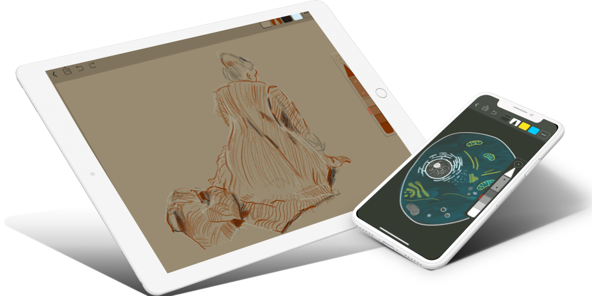

Tactilis Slate
A simple and powerful app designed specifically for drawing
Tactilis combines the simplicity of a pencil with the power and flexibility of a computer to give you a unique experience, never seen in traditional media or modern drawing apps.

